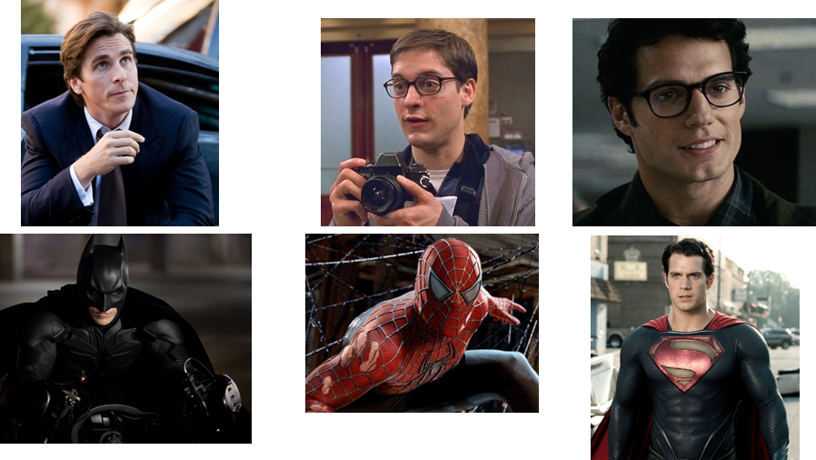
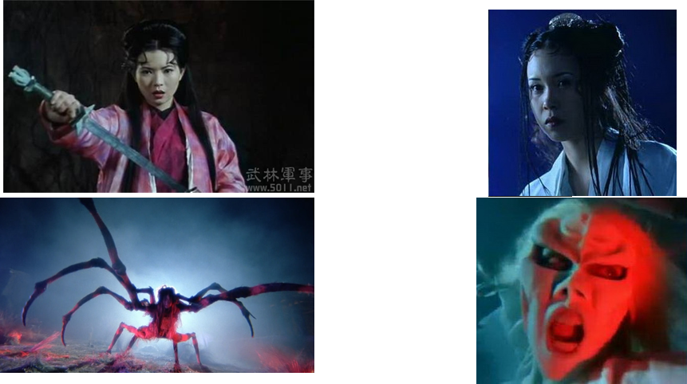

Below is a set of words from Maasai, written phonetically. You don't need to know the language to do this analysis;
these words are just some data for us to work with.
| [sarkin] | intermarriage taboo |
| [eŋgila] | little garment |
| [imbok] | you clean ceremonially |
| [ijjook] | we |
| [olkila] | garment |
| [imbaɣiβak] | you are restless |
| [olpurkel] | dry steppes |
| [koɣoo] | grandmother |
| [eŋgoo] | advise him |
| [ilarak] | murderers |
| [keβer] | heaven |
| [ilkeek] | trees |
| [poɣira] | all |
| [eŋgamaniɣi] | name of age-set |
| [eŋoɣi] | sin |
| [olkiɣuei] | thorn |
| [kaɣe] | but |
| [olɗuɣa] | shop |
For this analysis, I want to concentrate first on the velar sounds. If you look at the above word list (feel free to consult
an IPA table if there are letters you don't recognize), you can see that Maasai has three velar consonants: [k] (voiceless
velar stop), [g] (voiced velar stop), and [ɣ] (voiced velar fricative). Based on what you learned in the Phonetics
module, you should be able to pronounce any of these sounds to see what they sound like, even if you don't know this language.
Now I want you to list the environments in which each sound appears. So, for example, the first word is [sarkin]. I
see that this word includes a [k], I also see that there's an [r] before the [k], and an [i] after the [k]. So when I list
all the environments where [k] appears, I can record this as "r_i" (indicating that I found a "k", and it's between an "r"
and an "i". When I want to list the environments where [g] appears, the first one I will see is the word [eŋgila],
so for the environments where [g] appears I can write down "ŋ_i" (indicating that I found a "g", and it was in between
a "ŋ" and a "i").
Go through the whole list, and find all the environments where [k] appears, find all the environments where [g] appears, and
all the environments where [ɣ] appears. It's useful to list these in columns rather than rows (i.e., make one vertical
column listing all the environments where [k] appears, make another vertical column listing all the environments where [g]
appears, etc.). Write your answers down.
Here are the environments I found for each sound. The ones you found in the previous question should look similar to this.
(I used "#" to indicate the beginning or end of a word.)
| k |
g |
ɣ |
| r_i | ŋ_i | a_i |
| o_# | ŋ_o | o_o |
| o_# | | o_i |
| l_i | | i_i |
| a_# | | i_i |
| r_e | | o_i |
| #_o | | i_u |
| a_# | | a_e |
| #_e | | u_a |
| l_e | | |
| e_# | | |
| l_i | | |
| #_k | | |
Now, see if you can make any generalizations. For example, look at the environments where [ɣ] occurs. Is there anything you
can say about these environments? Does [ɣ] only occur in a particular situation? Is there any situation where [ɣ]
never occurs? What pattern do you see? What is in common across all the environments where [ɣ] occurs?
Try the same thing for [g]. Is there any pattern?
And finally, for [k]. Is there any pattern, or it is pretty random/unsystematic?
Describe your generalizations.
From the previous dataset, you should have been able to notice the following generalizations:
- [ɣ] only ever occurs in between two vowels. It does not occur in any other situations.
- [g] only ever occurs after a nasal, [ŋ]. It does not occur in any other situation.
- [k] occurs anywhere else. It never occurs in the situation where [ɣ] occurs (between two vowels),
and it never occurs in the situation where [g] occurs (after [ŋ]). But it can occur in any other situation.
This is a special kind of situation in phonology called complementary distribution: we have several sounds that
never occur in the same situation. This gives us reason to suspect that they might not be different sounds; they might
be different versions of the same sound.
To see what I mean by this, think about superheroes (see the picture below for examples).

In the classic superhero movies, superheros usually had a secret identity. (I'm not sure if they still work this way in the
new Marvel movies, because I don't watch them.) For example, Batman's real identity is the businessman Bruce Wayne, but
people don't know that; when he goes out to fight the bad guys, he puts on his Batman mask so that people won't recognize
him. Spiderman's real identity is the student Peter Parker, but people don't know that; he wears the Spiderman mask so people
can't recognize him. Superman's real identity is the journalist Clark Kent (he doesn't wear a mask, but when he's not being
Superman he just puts on glasses and apparently people don't recognize him anymore? it's pretty stupid!)
Or, if you're not a fan of superheroes, think of some of the classic form-changing heroes and monsters of Chinese literature
and movies. For example, 大話西游
has two 妖怪s (evil spirits), who normally look like women but sometimes turn into their monster forms:

e.g., 白骨精 usually looks like Karen Mok, but during the full moon or whatever she turns into a creepy ghost.
The bottom line is, each of these people has two versions. Batman sometimes looks like Batman and sometimes looks like
a normal businessman. 白骨精 sometimes looks like Karen Mok and sometimes looks like a creepy ghost.
Because these are two versions of the same person, you will never see both of them together in the same place. You won't see
Karen Mok standing around talking to ghost 白骨精; you won't see Batman standing around talking to businessman
Bruce Wayne. It's impossible, because they're the same person. In fact, that's sometimes how others figure out who they are;
in one of the movies a bad guy figured out Batman's true identity, because he noticed that Batman and Bruce Wayne are never in
the same place, and based on that information he deduced that they're just two different versions of the same person.
How does this all relate back to phonology? The same logic applies: e.g., we notice that [g] and [ɣ] never appear in the
same places, so we should be suspicious that they might just be two different versions of the same sound. Just like
Batman and Bruce Wayne aren't different people (Bruce Wayne is the way he looks when he goes to the company, and Batman is the
way he looks when he goes to fight weird bad guys in the street), we might also conclude that [g] and [ɣ] are not
actually different sound categories in this language: they're two different versions of the same sound category, and [g] is
just the way it happens to be pronounced when it comes after a nasal, and [ɣ] is just the way it happens to be
pronounced when it comes in between two vowels. And [k] is just the way this same sound happens to be pronounced in every
other context.
Thinking back to the image shown at the end of the previous activity: these are all physically different sounds, but in your
mind a circle has been drawn around them because they're all part of the same "group".
One way to express these relationships is to assume that a given sound changes its pronunciation when it's put into a certain
context. For example, [k] is normally pronounced [k] in this language. But if you put it after a nasal, it turns into [g].
Or if you put it in between two vowels, it turns into [ɣ]. These patterns are called phonological rules:
descriptions of how sounds change as a result of their context. A phonological rule can be expressed in plain English, like
I just did above: you say what sound changes into what other sound, in what context. There is also
a formal notation for phonological rules, which looks like this:
k → g / ŋ_
In a phonological rule notation like this, "→" means "changes into" or "is pronounced as", and "/" means "in the context
of..." or "in the context where..." or even just "when". So the above rule could be read out loud as "k is pronounced as
g when it appears after ŋ"
Another way to express phonological rules formally is like this:
ŋk → ŋg
This can be read out loud as "ŋk is pronounced as ŋg".
Just now I have shown you two different ways to formally represent the relationship between [k] and [g]. Now, use at least
one of these methods to formally describe the relationship between [k] and [ɣ].
In the activities so far you have encountered several important concepts from phonology. Now let's give names to these concepts.
- Phone: A phone is a speech sound—any sound. As we've seen, people make many different sounds (phones).
- Phoneme: A phoneme is an abstract sound category. A phoneme is not actually a sound; it's an abstract grouping
in a person's mind. You will never actually hear or say a phoneme, because a phoneme is an abstract category.
- Allophone: An allophone is a way of pronouncing a phoneme. Some phonemes only have one allophone (i.e., some
phonemes can only be pronounced in one way). Other phonemes have many allophones (i.e., they can be pronounced in many
different ways). In the Maasai example we just discussed, we saw a phoneme with three allophones: an abstract sound
category that can be pronounced as [k], or as [g], or as [ɣ], depending on the context.
To take another example, think back to the issue with symphony we discussed in the previous activity. Bilabial
[m] and labiodental [ɱ] are different phones: they're different sounds that are pronounced in different
ways. However, English speakers treat them as the same. They are probably two different allophones of the same
phoneme. In other words, there is some abstract sound category in English, which is pronounced as [m] most of
the time, but it's pronounced as [ɱ] if it appears before an [f] sound (remember the example words symphony,
comfort, and nymph; these all have an [f] sound just after the [ɱ] sound).
In the previous questions I gave you a set of Maasai words and had you find out the relationships between the velar sounds [k],
[g], and [ɣ]. Now let's look at some more patterns of the language. Here is a list of more words:
| [emburuo] | smoke |
| [poɣira] | all |
| [pus] | light colored |
| [imbala] | papers |
| [imbaɣiβak] | you are restless |
| [ilpaβit] | hairs |
| [olporror] | age set |
| [olpul] | slaughtering place |
| [embiʃan] | bravery |
| [olpurkel] | dry steppes |
| [endorop] | bribe him |
| [endulelei] | apple |
| [enduβeiðai] | Taveta woman |
| [eŋgiruðoðo] | fright |
| [imbok] | you clean ceremonially |
| [keβer] | heaven |
| [olʃiβet] | stake |
| [enaiβoʃa] | Naivasha Lake |
| [taru] | sin |
| [tasat] | disabled |
| [tisila] | sift it |
| [tiʃila] | scrutinize it |
| [keβer] | heaven |
| [oltaa] | lamp |
| [iltooi] | barrel |
| [indai] | you (plural) |
| [endaaraða] | fight each other |
Following the same procedures as we used before, consider the labial sounds: [p] (voiceless bilabial stop), [b]
(voiced bilabial stop), and [β] (voiced bilabial fricative). List all the environments where each sound occurs,
look for generalizations, and then write phonological rules (using formal notation or just plain English) describing
how the sounds are related. You don't need to show all the environments here; just write the rules you come up with
at the end.
Then repeat those procedures to analyze the alveolar sounds: [t] (voiceless alveolar stop), [d] (voiced alveolar stop),
and [ð] (voiced dental/alveolar fricative). Write down the rules you discover.